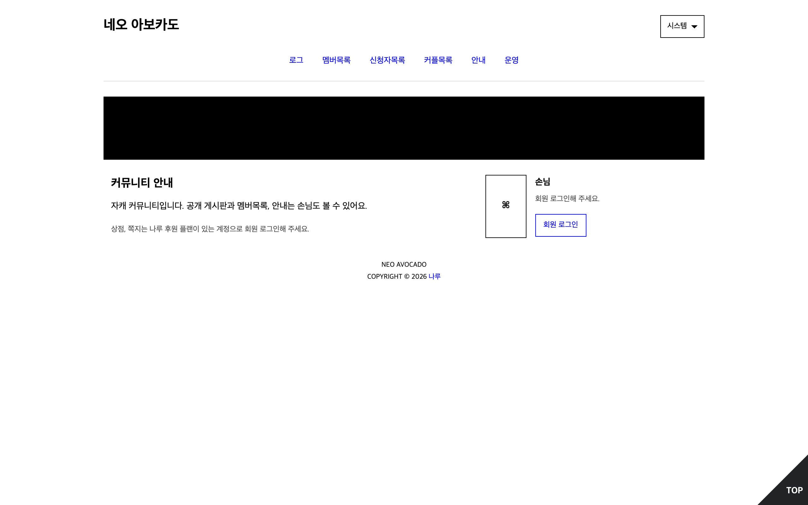
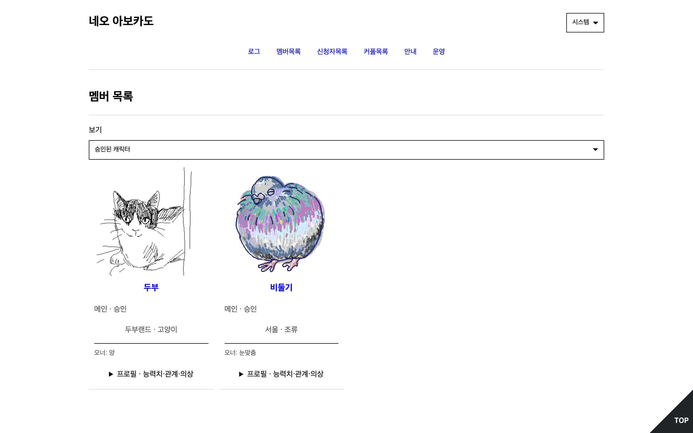

기능
캐릭터 신청·승인, 로그 게시판, 주사위, 탐색·조합, 능력치·경험치, 상점·인벤토리, 쪽지·호출, 운영 화면.
설치
회원은 나루 계정만 있으면 됩니다.
아보카도 에디션을 나루로 옮긴 자캐 커뮤니티 템플릿.


캐릭터 신청·승인, 로그 게시판, 주사위, 탐색·조합, 능력치·경험치, 상점·인벤토리, 쪽지·호출, 운영 화면.
회원은 나루 계정만 있으면 됩니다.